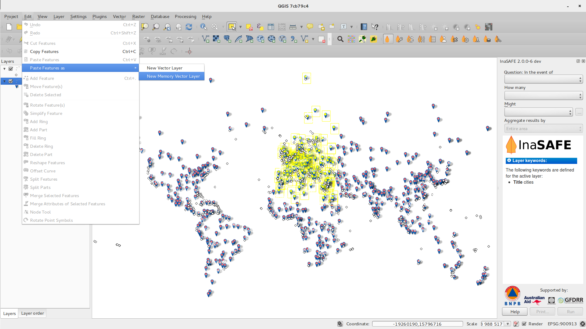
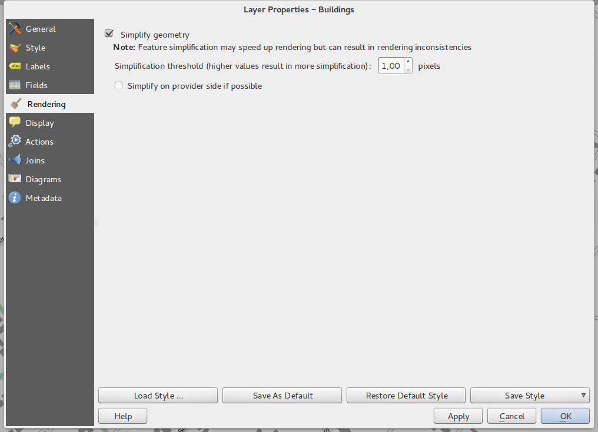

Візуальний список змін для версії 2.2¶
Список змін у QGIS 2.2.0. Основна увага у цьому випуску приділялась вдосконаленню та продуктивності — ми реалізували багато нових можливостей, щоб зробити інтерфейс більш зручним та легким у використанні. Значна увага приділялась редактору макетів (для створення друкованих карт), щоб перетворити його на повноцінну платформу для створення красивих картографічних продуктів.
Новий функціонал може призводити до появи нових помилок — якщо ви знайшли помилку, будь ласка, повідомте про неї у багтрекері QGIS.
Ми хочемо подякувати всім розробникам, авторам документації, тестувальникам та іншим людям, які добровільно витрачали свій час та сили.
From the QGIS community we hope you enjoy this release! If you wish to donate time, money or otherwise get involved in making QGIS more awesome, please wander along to qgis.org and lend a hand!
І нарешті ми хочемо подякувати нашим офіційним спонсорам за їх безцінну підтримку:
- ЗОЛОТИЙ спонсор: Asia Air Survey, Японія
- СРІБНИЙ спонсор: G.A.I.A. mbH, Німеччина
- СРІБНИЙ спонсор: State of Vorarlberg, Австрія
- БРОНЗОВИЙ спонсор: www.molitec.it, Італія
- БРОНЗОВИЙ спонсор: www.argusoft.de, Німеччина
A current list of donors who have made financial contributions large and small to the project can be seen on our donors list.
If you would like to make a donation or sponsor our project, please visit our sponsorship page for details. QGIS is Free software and you are under no obligation to do so. Sponsoring QGIS helps us to fund our six monthly developer meetings, maintain project infrastructure and fund bug fixing efforts.
- Програма та проекти
- Провайдери даних
- Цифрування
- Загальне
- Редактор макетів
- QGIS Server
- Символіка
- Градієнтне зафарбовування
- Підписи для растрів з палітрою
- Інвертовані кольорові шкали
- Копіювання та вставка у рендерері за правилами
- Генералізація «на льоту»
- Якірні точки для маркерних шарів
- Тематичні карти на основі виразів
- Підтримка виразів для розміру та атрибутів діаграм
- Правило ELSE в рендерері за правилами
- Внутрішня межа для полігонів
- Інтерфейс
Програма та проекти¶
Вимірювання у морських милях¶
Для мореплавців реалізовано можливість вимірювати відстані у морських милях. Активувати це можна у діалозі настройок .

Провайдери даних¶
Відношення один до багатьох¶
Цей випуск дозволяє задавати відношення типу 1:n. Відношення задаються у діалозі властивостей проекту. Якщо шар має відношення, стає доступним новий елемент редагування (наприклад, коли виконується визначення об’єкта та відкривається його форма), який відображає зв’язані записи. Більш детальну інформацію можна знайти тут.


Вставка в якості нового шару¶
Дуже часто в процесі роботи з ГІС виникає необхідність вибрати певні об’єкти та створити з них новий шар. QGIS давно дозволяє зберегти вибрані об’єкти у новий шар, а тепер також надає можливість створити новий файл або тимчасовий шар з даних, які знаходяться у буфері обміну. Просто виділіть об’єкти, скопіюйте їх у буфер обміну, а потім виконайте та виберіть New vector layer або New memory layer. Найзручніше в цій можливості те, що можна створити шар з опису об’єктів у форматі Well Known Text (WKT), який знаходиться в буфері обміну.

Легенда WMS¶
До QGIS 2.2 провайдер WMS не відображав легенду у списку шарів карти та редакторі макетів. Обидві проблеми вирішено в QGIS 2.2.
Клацнувши по легенді шару можна відкрити вікно з легендою у повному розмірі. Легенда відображає інформацію в залежності від поточного масштабу. Легенда буде відображатися лише в тому випадку, якщо сервер підтримує запит GetLegendGraphic. Існує можливість змінювати роздільну здатність легенди.

Цифрування¶
Інструмент «Заповнити дірку»¶
Цей інструмент дозволяє створювати дірки та автоматично заповнювати їх новим об’єктом. Якщо в процесі затиснути клавішу Ctrl, то атрибути нового об’єкта будуть такими самими як і у батьківського.

Загальне¶

Вставка WKT з буферу обміну¶
QGIS дозволяє вставляти та створювати новий шар на основі WKT. Просто зкопіюйте WKT та вставте у шар, що знаходиться в режимі редагування. Так само можна створити новий шар.
Редактор макетів¶
Вдосконалення рамки карти типу «зебр໶
З’явилась можливість налаштування кольорів для рамки типу «зебра».
Обертання елементів¶
Елементи будь-якого типу (включаючи масштабну лінійку, таблиці та легенду) тепер можна обертати. Наприклад, можна обертати підписи, щоб вони краще вписувалися в макет (як показано нижче). Також було вдосконалено функцію зміни розмірів.

Масштаб макету та вдосконалення лінійок¶
Зовнішній вигляд лінійок було вдосконалено завдяки іншому алгоритму масштабування, запровадженню дрібних поділок та використання повернутого тексту на вертикальній лінійці. Також реалізована можливість сховати/показати лінійки. З’явилась можливість швидко змінити масштаб на 100%, за допомогою нової кнопки на панелі інструментів. Вікно редактора макетів тепер дозволяє швидко встановити масштаб сторінки завдяки новому випадаючому списку масштабів на панелі стану. Крім того, запроваджено новий індикатор, що відображає точну позицію курсора. Прибрано кнопки [Закрити] та [Довідка], щоб звільнити якомога більше простору для макету.

Генерація файлів прив’язки¶
Редактор макетів тепер дозволяє створювати прив’язані карти. Переконайтесь, що вибрано необхідний елемент карти, та експортуйте її. Разом з зображенням буде створено і файл прив’язки, що дозволяє завантажити експортовану карту у вигляді растрового шару.

Робота з декількома елементами¶
Реалізовано можливість одногочасного переміщення та зміни розміру декількох елементів. Під час зміни розміру можна затиснути Shift, щоб зберегти відношення сторін, або Ctrl, щоб змінювати розмір відносно центру елемента. Ці клавіші працюють і під час переміщення елементів. Затискання Shift дозволяє переміщення по горизонталі та вертикалі, а Ctrl — тимчасово відключає прилипання.
Вдосконалення атласів¶
У режимі попереднього перегляду ви можете побачити сторінки без генерації всього атласу. За необхідності можна налаштувати охоплення карти або масштаб для кожної сторінки окремо. Настройки атласу перенесено з панелі атласу на панель карти, що дозволило мати декілька карт в режимі атласу одночасно. З’явилась нова настройка для автоматичного центрування оглядової карти. Також тепер можна змінювати оздоблення об’єктів в залежності від того чи є вони поточним об’єктом атласу. Детальніше у цьому дописі.

Розширений вибір об’єктів¶
Тепер ви можете вибрати декілька елементів одночасно клацаючи по ним або вказуючи область. Підтримуються додаткові режими «додати до вибору» (затиснути Shift), виключити з вибору (Ctrl) та «серед вибраних» (Alt).
Вдосконалене оздоблення сторінок та фігур¶
Стиль фону сторінок макету тепер використовує всі можливості символіки QGIS. Можна експортувати макети з прозорим чи напівпрозорим фоном. Фігури (прямокутники, трикутники та еліпси) також використовують ті ж можливості оздоблення, що й полігональні шари.
QGIS Server¶
Підтримка WCS¶
QGIS Server уже підтримує стандарти Web Map Service (WMS версій 1.3.0 та 1.1.1), Web Feature Service (WFS версії 1.0.0) та Web Feature Service with Transaction (WFS-T). У цій версії QGIS реалізовано підтримку протоколу Web Coverage Service (WCS версії 1.0.0).

Символіка¶
Градієнтне зафарбовування¶
Новий режим градієнтного зафарбовування дозволяє створювати красиві, як ніколи, карти. У вашому розпорядженні велика кількість налаштувань, в тому числі:
- зафарбовування з використанням двох кольорів або кольорової шкали
- початок градієнту від об’єкта або від карти
- орієнтація градієнта відносно центроїда об’єкта
- конічний, лінійний або радіальний градієнт
- налаштування на основі даних (для використання виразів або значень полів) для всіх параметрів градієнтів
Дізнатися більше можна тут.

Підписи для растрів з палітрою¶
Растри з фіксованою палітрою (зазвичай це карти рослинного покрову) тепер можуть мати мітки, прив’язані до кольорів, які будуть відображатися у списку шарів та в легенді редактора макетів.

Інвертовані кольорові шкали¶
У діалог налаштування стилів додано можливість інвертування кольорових шкал.

Копіювання та вставка у рендерері за правилами¶
При роботі з рендерером за правилами реалізовано можливість копіювання та вставки правил.

Генералізація «на льоту»¶
У QGIS 2.2 реалізовано підтримку спрощення (генералізації) об’єктів «на льоту». Завдяки цій можливості можна значно прискорити відображення шарів з великою кількістю складних об’єктів на дрібних масштабах. Важливо: спрощення об’єктів у деяких випадках може призводити до появи артефактів відображення, в тому числі щілин між полігонами та неправильного відображення при використанні зсуву у символьних шарах.

Якірні точки для маркерних шарів¶
Під час створення стилів з використанням маркерних шарів (наприклад, SVG-маркерів) можна вказати яка частина зображення повинна стати «опорною» точкою. Наприклад, можна вказати, що лівий нижній кут зображення повинен співпадати з позицією об’єкта. Також можна використовувати параметри на основі даних.

Тематичні карти на основі виразів¶
Категоризовані та градуйовані тематичні карти тепер можна створювати на основі виразів, а не просто значень атрибутів. Поле вибору атрибута було доповнено редактором виразів, і таким чином відпадає необхідність у попередньому обчисленні нового значення та створенні нового атрибута лише для потреб символіки.

Підтримка виразів для розміру та атрибутів діаграм¶
З’явилась можливість використання виразів для визначення розміру та інших атрибутів діаграм. Детальніше тут

Правило ELSE в рендерері за правилами¶
Рендерер за правилами тепер підтримує правило ELSE, яке виконується якщо жодне з інших правил не підходить. Правила ELSE можуть бути вкладеними, як і будь-які інші.
Наприклад:
type = 'water' (style grey)ELSE (style red)
Внутрішня межа для полігонів¶
Реалізовано можливість розфарбовувати тільки внутрішню сторону полігонів (таким чином межа не перекриває межу сусідніх полігонів).
Детальну інформацію про цю можливість можна знайти у другій частині цього допису.

Інтерфейс¶
Вдосконалені діалоги властивостей¶
Було оновлено зовнішній вигляд всіх діалогів настройки. Це косметична зміна, але ми сподіваємось, що завдяки цьому користувачам буде зручніше працювати з діалоговими вікнами.

Покращений редактор виразів¶
Дещо оновлено діалог редактора виразів — досвідчені користувачі тепер можуть сховати панель операторів. Детальніше тут.

Нові «гарячі» клавіши¶
Ми оновили деякі «гарячі» клавіші, щоб підвищити продуктивність роботи.
Ctrl + D— видалити вибрані шари зі списку шарів>— вибрати наступну вершину під час роботи з інструментом редагування вузлів<— вибрати попередню вершину під час роботи з інструментом редагування вузлівDeleteабоBackspace— видалити вибрані об’єкти або вузли при роботі з інструментом редагування вузлівF5оновити карту
Дивіться також Issue 9094 та Pull Request 1010.